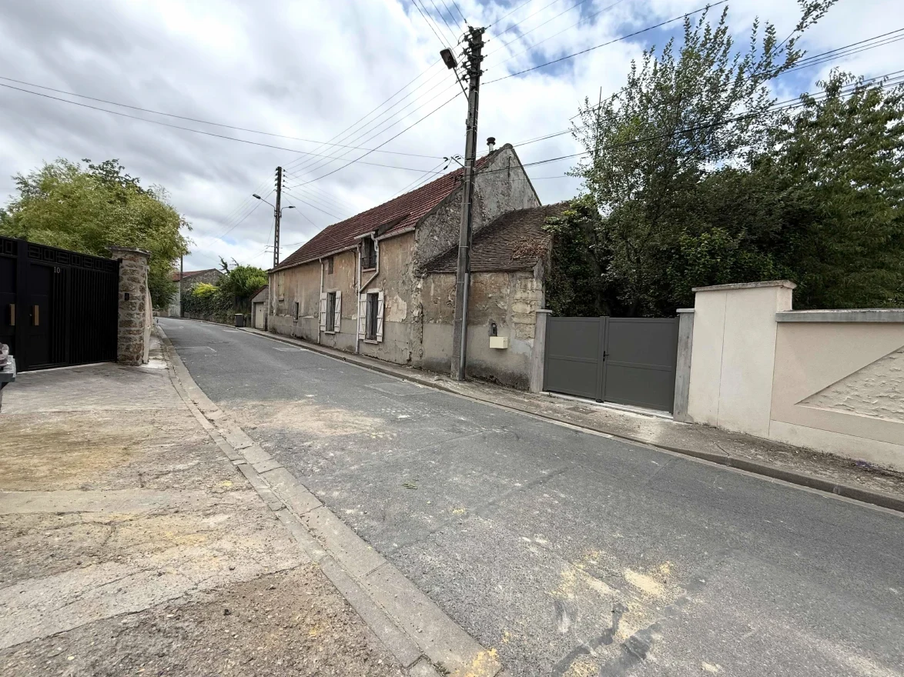
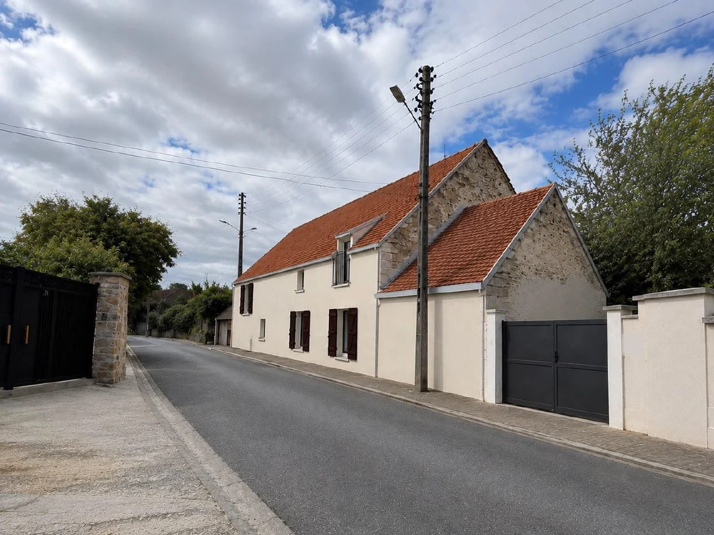

Réalisation · Wissous (91)
Un corps de ferme retrouve son éclat.
Ravalement à la chaux, à deux pas d'un monument historique.
Avant / après · côté rue
Même maison. Autre allure.

AVANT

APRÈS · INSERTION PROJET
La façade sur rue
Volumes, ouvertures, toiture : tout est conservé.
EXISTANT
PROJET · ENDUIT CHAUX, FINITION MATE
Pourquoi la chaux
Un mur ancien doit respirer.
1
Purger l'ancien enduitPiochage des parties dégradées ou non adhérentes.
2
Reprendre la pierreMaçonnerie et joints réparés ponctuellement.
3
Enduire à la chauxCompatible avec les murs anciens, finition talochée mate.
Aucun enduit ciment : il enferme l'humidité dans la pierre.
Secteur protégé
Près d'un monument historique ?
500 mautour du monument, l'Architecte des Bâtiments de France donne son avis.
Ici, l'église Saint-Denis de Wissous. Un ravalement s'y déclare, même à l'identique.
Écrivez « FAÇADE » en DM →